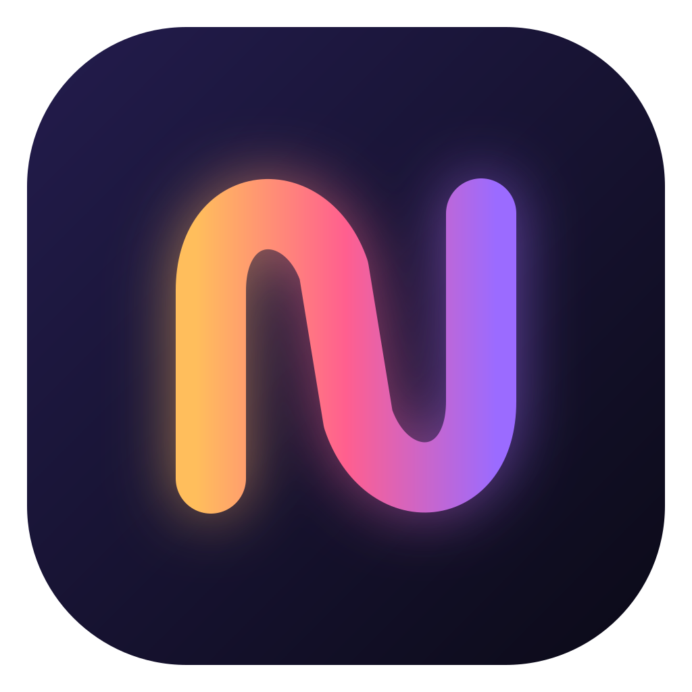
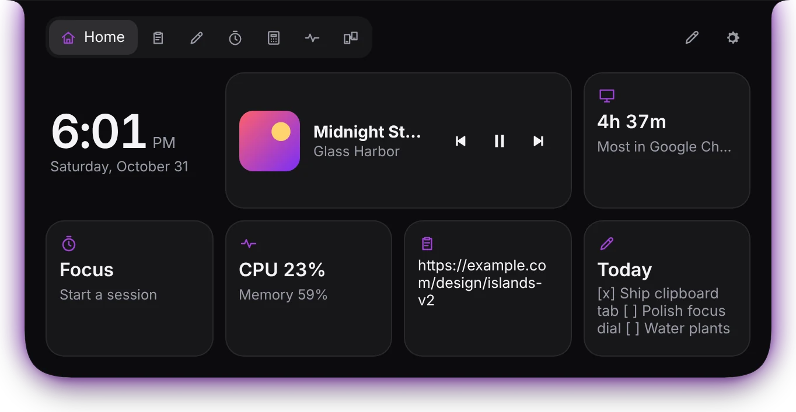
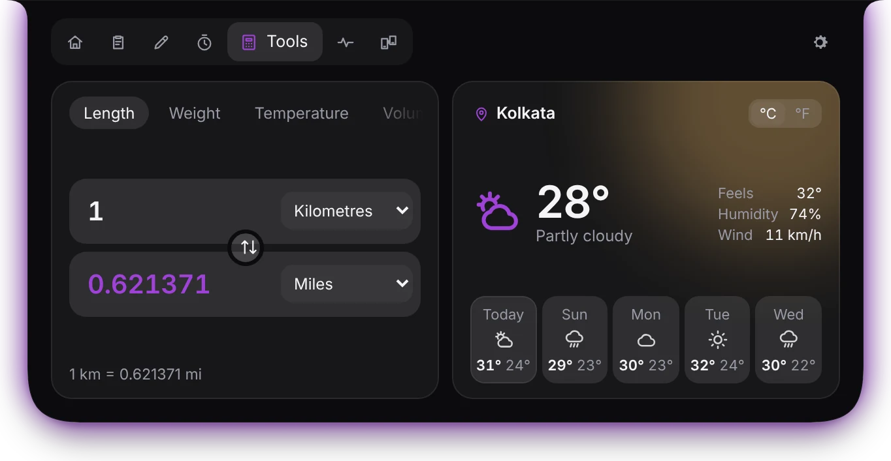
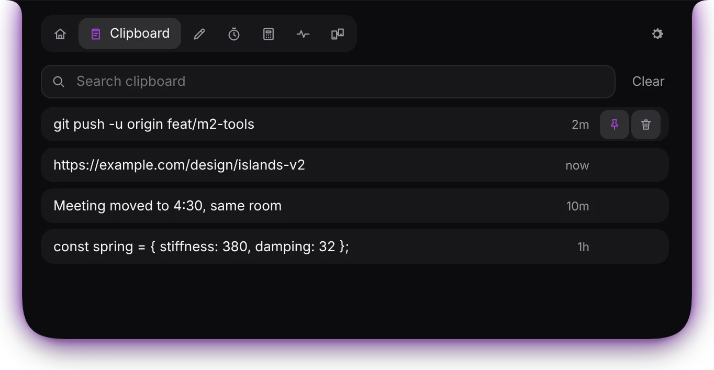
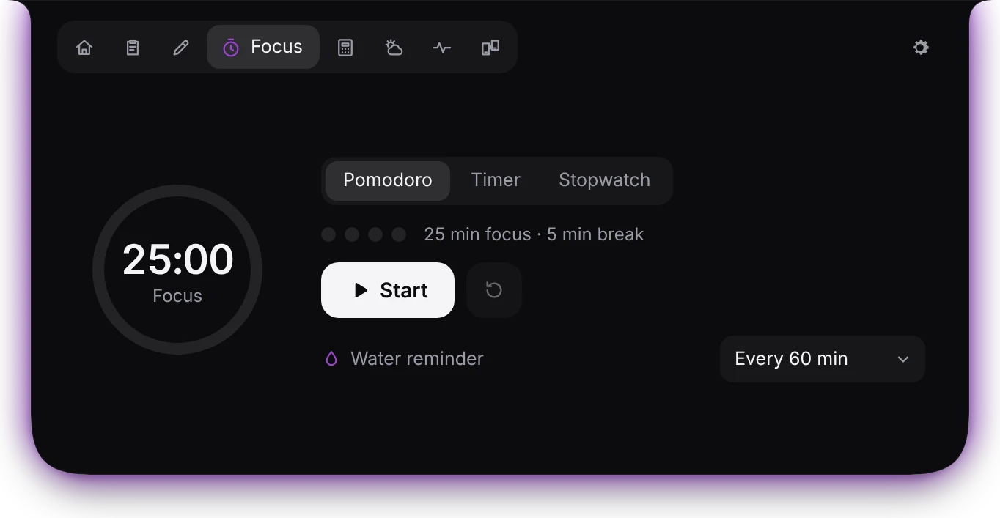
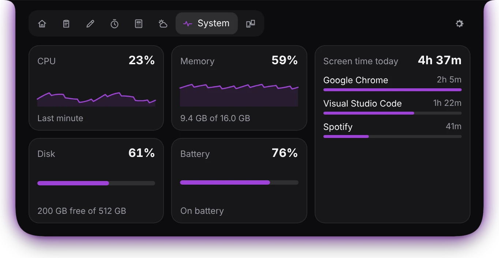

Now playing
Cover art, controls and a glow that breathes with the beat, from Spotify, your browser or any player Windows knows.

NotcherVersion 1.0.0 is out
Notcher gives Windows a soft, fluid notch that holds your music, clipboard, notes, timers, weather and more. Hover to open it. Move away and it melts back.
Free and open source · Windows 10 and 11 · No account, no ads





Seven little tabs that open with a hover or Ctrl+Alt+Space.
Cover art, controls and a glow that breathes with the beat, from Spotify, your browser or any player Windows knows.
The last 200 things you copied, text and images, with search and pins. Passwords are never kept.
Length, weight, temperature, data, time and live currency rates, in a converter that copies with one click.
Right now and the next five days, for where you are or any city you type. Also as a Home widget.
Pomodoro, timer and stopwatch that stay visible on the island, plus a gentle nudge to drink some water.
How long you've been at your PC today and in which apps. Time away doesn't count, and it all stays on your PC.
Scan a QR code and send photos and files between your phone and PC over your own Wi-Fi.
WhatsApp, Telegram and Mail messages slide out of the island, with or without the text.
Upload, download and today's usage beside your tray icons. Nudge it left or right until it sits just so.
Every movement in Notcher runs on springs, so it eases in and settles like something physical. Change your mind halfway and it turns around smoothly instead of jumping.
One small installer. No account, nothing to set up.
Download for WindowsLatest release · All releases